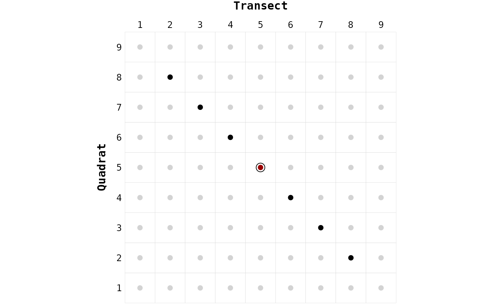

For one node (argument focus), finds neighbors among a list of nodes
according to the bishop left movement.
This movement is derived from the bishop() method and can only move along
the bottom-right to top-left diagonal.
The detection of neighbors using this method can only work with
two-dimensional sampling (both transects and quadrats).
For sampling of type transects-only or quadrats-only,
please use the functions fool() or pawn(), respectively.
bishop_left(
nodes,
focus,
degree = 1,
directed = FALSE,
reverse = FALSE,
self = FALSE
)a data.frame with (at least) the following three columns:
node, transect, and quadrats. Must be the output of the function
create_nodes_labels().
an character of length 1. The node label for which the
neighbors must be found. Must exist in the nodes object.
an integer of length 1. The maximum number of neighbors to
search for.
a logical of length 1. If FALSE (default), search for
neighbors in all directions (undirected network). Otherwise, the network
will be considered as directed according to the orientations of the
network. The default orientation follows the order of nodes labels in
both axes.
a logical of length 1. If TRUE, change the default
orientation of the network. This argument is ignored if directed = FALSE.
See examples for further detail.
a logical of length 1. If TRUE, a node can be its own
neighbor. Default is FALSE.
A subset of the nodes (data.frame) where each row is a neighbor
of the focal node.
This function is internally called by create_edges_list() but it can be
directly used to 1) understand the neighbors detection method, and 2) to
check detected neighbors for one particular node (focus).
library("chessboard")
# Two-dimensional sampling (only) ----
sites_infos <- expand.grid("transect" = 1:9, "quadrat" = 1:9)
nodes <- create_nodes_labels(data = sites_infos,
transect = "transect",
quadrat = "quadrat")
focus <- "5-5"
# Default settings ----
neighbors <- bishop_left(nodes, focus)
gg_chessboard(nodes) +
geom_piece(nodes, focus) +
geom_neighbors(nodes, neighbors)
# Higher degree of neighborhood ----
neighbors <- bishop_left(nodes, focus, degree = 3)
gg_chessboard(nodes) +
geom_piece(nodes, focus) +
geom_neighbors(nodes, neighbors)

# Directed (default orientation) ----
neighbors <- bishop_left(nodes, focus, degree = 3, directed = TRUE)
gg_chessboard(nodes) +
geom_piece(nodes, focus) +
geom_neighbors(nodes, neighbors)
# Directed (reverse orientation) ----
neighbors <- bishop_left(nodes, focus, degree = 3, directed = TRUE,
reverse = TRUE)
gg_chessboard(nodes) +
geom_piece(nodes, focus) +
geom_neighbors(nodes, neighbors)